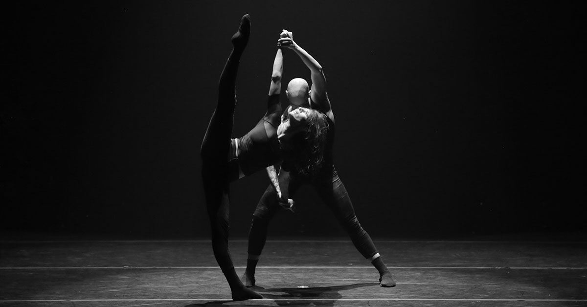

Ο χορός είναι μορφή καλλιτεχνικής και αθλητικής έκφρασης η οποία γενικά αναφέρεται στην δυνατότητα έκφρασης συναισθημάτων κλπ. Μέσω της κίνησης του σώματος, αποτελεί ενα τρόπο επικοινωνίας μέσω του σώματος αλλά και της ψυχής.Ο χορός αναπτύσσει και εξελίσσει τον άνθρωπο, τον φέρνει κοντά στον εαυτό του, στη γνώση, στην αυτογνωσία, στην εμπειρία τη δική του και των άλλων.
